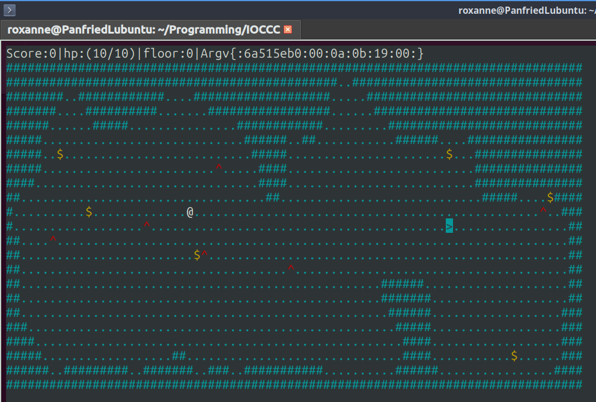
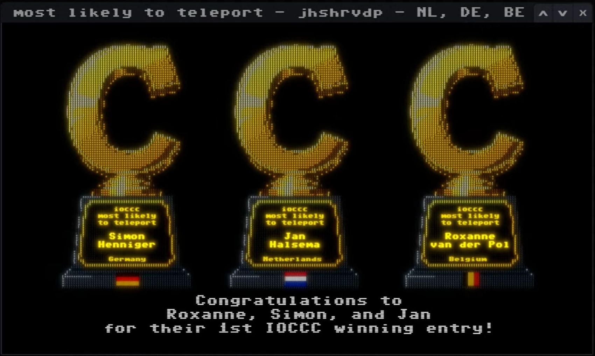

J_S_Rogue is a rogue-like dungeon crawler where you have to collect coins and avoid enemies as you go down the 100 procedurally generated cave levels. I made this together with two other people: Jan and Simon, for the International Obfuscated C Code Contest.
It is written in (obfuscated) C and compiles without warnings. Our lil' guy ended up being one of the 2025 IOCCC winning entries! "Most likely to teleport". [link]

#define m 1920
#include<time.h>
#include<stdlib.h>
# include <ncurses.h>
#define J for(i=l;i<m;++i)
#define X i=N(),x=i %(l),y=i/l
#define B(y,x) ((mvinch((y),(x))&255))
#define G(x) ((x<l)|(x>1839)|!((-~x&~1)%l))
#define Q(a,o,i,O,j) (a o i&&a+j!=E[j-1] O l)
#define Y(a) i=N();S[a]=(i/l)*j;S[a+1]=(i%l)*j;
#define F for(j=6*c;j<(6*c)+(c<100?6+c/5:0);j++)
#define K(a,i,j) if(!(H^a)&&w(y+i,x+j)){y+=i;x+=j;}
#define w(y,x) ((B(y,x)^35)&&(B(y,x)^(94))&&(B(y,x)^64))
#define W(y,x,i,j) ((w(y+i,x+j))&&(B(y+i,x+j)^62)&&(B(y+i,x+j)^60))
#define L(j,i) if(y==S[1+j]&&x==S[2+j]){c+=i;s+=i;M();y=S[1+i];x=S[2+i];}
#define A(y,x,c,a,b) init_pair(c,a,b),attron( COLOR_PAIR(c)),mvaddch(y,x,c)
int D[m],E[m],I[m],S[4:>,i,j,x,y,H,c,q,t,v,s,r,k=0,ch,C,V,p=10,h=10,l=80,*\
cows[]={&s,&c,&h,&y,&x,&v%>int N(){return D[i=rand()%m]==46?i:N();}void M(
){q++/* */;srand
(s);J D[i]=!
(((-~ i&~1)%l)&&(i/l<13)&&(i/l>p))&&(G(i)|((rand()%0x64)<45))? 35:46;
for(j =0;j<2;j++)J r=i%600,r[E]=r[I]=j,D[i]=G(i)?D[i]:(D[i-81] +D[i-l
]+D[i -79]+D [i-1]+D[i]+D[i+1]+D[i+81]+D[ i+l]+D[i + 79])<\
360 ? 35:46; j=c<100;Y(0);j = c > 0;Y(2); srand(s*q) ;F E[j
]=E[j ]?N():0,I[j]=I[j]?N():0;}int main(int _,char**a){char g[ ]=<%"\
P`lob7\"ayem7%\"a,\"a&ycillo7\"ay>odsx7\"u7\"-/u7\"-/u7\"-/u7\"-/u7\"-/u7z\
\x1D" };initscr();noecho();curs_set(0);start_color();while(*(g +j)^0)
{*(g+ j++)+=3;}s=time (0);M();X;if(_>1&& *++a){
char b[8];;j=0;while (j^6&&(ch=*++*a))if (ch^58
){b[k ++]=ch,k<8?k[b]= 0:0;}else*cows[j++]= strtol
(b,0, 16),k=0;j==6?M():(void)0;}V=p;C=t+V;ff:K(119,-1,0)K(97,0 ,-1)K(
115,1 ,0)K(100,0,1)L(-1,1)else L(1,-1)F{I[j]=(I[j]/l==y)&&(I[j ]%l==x
)?++v ,A(y,x
,64,7/* */,0),m\
ove(y,x),0:I[j];int a=E[j]/l,b=E[j]%l,yd=abs(a-y),xd=abs(b-x),f=rand()%4;E[ j]
+=t%2/* */?yd<=p &&
xd<=p ?xd <= yd?y<=a
?W(a, b,-1,0)*Q(a,>,0,/,+1)*-l:W(a,b,1,0)*Q(a,<,24,/,2)*l:(x<= b)?-W(a, b,0,-1)*
Q(b,> ,0,%,+1):W(a,b,0,1)*Q(b,<,l,%,2):f?f==1?-(W(a,b,0,-1)&&( E[j])):f==2?(W(a,b,1,0
)&&(E [j]<(m-l)))*l:W(a,b,0,1)&(E[j]<m):(W(a,b,-1,0)&(E[j]>l)) *-l:0;h-=(yd==1)&!xd
||!yd &(xd== 1)?1+ rand ()
%2:0; }if(h< /* Q -- A S W D -- T-=3 argv[1] */ 1||c> 0x63||
( H== 0x71)) return endwin
( ),+ printf("U %s! Score: %d\n",h<1?"lose":c>99?"win":"",v);J {A(i/l
,i%l, D[i],6 ,0);F I[j]==
i?A(i /l,i%l /* *_** *_**** *_****** *_*_*_**** */ ,36,3 ,0):0,
E[j:> ==i?A( i/l,i %l,94,
1,0):0;}c<=99?A(*S,S[1],62,0,6):0;c?A(S[2],S[3],60,0,5):0;A(y,x,64,7,0);mv\
printw(0,0,g,v,h,p,c,s,c,h,y,x,v);H=getch();if(H==116&&v>=3)X,v-=3;if(t++==
C)h+=h <p,C=t
+V; goto
ff ;}
volatile void * race[] = { "I can look at that lava lamp for hours! Boing boing ... ..." };